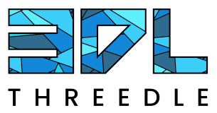
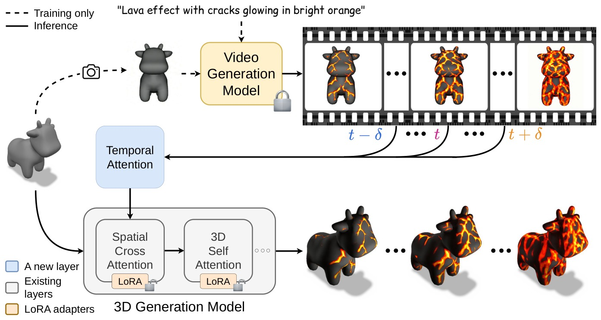
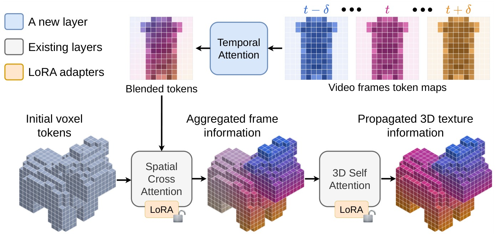

We present DynaMesh, a dynamic texture generation method for 3D meshes. Given a textureless shape and a text
prompt describing an effect, our method produces an appearance that evolves while the object's geometry remains
unchanged. Previous works on dynamic 3D content generation have focused on motion, where an object's geometry
and position change while keeping its appearance the same. Methods on texture generation sit on the other side
of the problem, painting appearance onto a shape as a fixed surface property and not as an evolving process.
Neither addresses a visual effect that propagates on a 3D object.
A natural route consists of two generators: a video model that shows the effect from a single view, and an
image-to-3D generator that lifts each frame to 3D. However, the latter has no notion of time, so running it per
video frame produces a sequence that flickers, loses effect details, and yields a different mesh at every video
frame. Our method addresses these failures by conditioning a video model on a render of the mesh and the prompt
to obtain a reference video, then running a frozen image-to-3D generator on the video with two changes. The
conditioning of each frame is blended over a temporal window, and low-rank adapters are fit per shape to restore
the lost details. The mesh is encoded once for the whole sequence, so geometry is constant by construction, and
the output is a single mesh with a texture per frame. Applied to various objects and effects, DynaMesh
substantially improves over recent video-to-4D and texturing methods, and can generalize its temporal effect to
different shapes never seen during training.

System overview. A render of the input mesh and a text prompt describing the effect are passed to a video generation model, which returns the reference video for our pipeline. The 3D generator then produces the textured object at every frame. Our temporal cross-attention (the new module) conditions each frame's generation on a window of neighboring video frames. Low-rank adapters on the attention modules are fit per scene to recover detail. Geometry is shared across frames, so the output is one mesh whose texture evolves with the video.

Turning a 3D generator of static objects into a dynamic texture generator. To generate a smooth temporal appearance sequence, we blend the tokens of nearby video frames with a temporal attention layer before they reach the 3D generator. The blended tokens describe what the surface should look like at that moment, the generator's cross-attention paints that appearance onto the voxels of the mesh, and its self-attention propagates the effect across the entire surface.
To interact with the rotating view, Scroll to zoom, Left Click + drag to rotate, and Right Click + drag to translate.
“Rorschach pattern forming”
“Blue paint cracks and peels”
“Rot spreads and darkens”
“Red cracks spreading”
Gallery of results. Four objects driven by four different effects. Each row shows the reference video, our output at two novel viewpoints, and the mesh with its final texture in an interactive rotating view. The texture remains coherent even at viewpoints unseen in training.
“Rorschach effect with spots growing” — reference video, the training shape, then twelve unseen shapes
“Lava effect with cracks glowing in bright orange” — reference video, the training shape, then twelve unseen shapes
Generalization across shapes. Per-scene adapters fit on a reference video are applied, without any retraining, to meshes never seen during fitting. Both effects clearly propagate on the new shapes according to the video. The adapters change only how appearance is generated, and each object keeps its own geometry, so the same spreading blots or lava cracks work even on different shapes.
To interact with the rotating view, Scroll to zoom, Left Click + drag to rotate, and Right Click + drag to translate.
“Polka dots gliding over the duck”
Our method can operate on objects that already have a texture and make it change over time, as shown for the moving spots over the duck. The dots glide around the ring while the head stays clear, and the painted eyes, beak, and molded shading hold their place, so only the pattern moves.
“Lava effect with cracks glowing in bright orange”
Reference video
DynaMesh (ours)
Frozen TRELLIS.2
MeshNCA
L4GM
SV4D 2.0
DG4D
We compare our method against the baselines on one reference video, with every method shown at two novel views that none of them was supervised on. The baselines either flicker or degrade the geometry at those views. Only our method tracks the effect consistently and preserves the shape's geometry.
@InProceedings{hansini2027dynamesh,
author = {Hansini, Raj and Chen, Guan and Hanocka, Rana and Lang, Itai},
title = {{DynaMesh: Dynamic 3D Texture Generation}},
booktitle = {International Conference on 3D Vision (3DV)},
year = {2027}
}